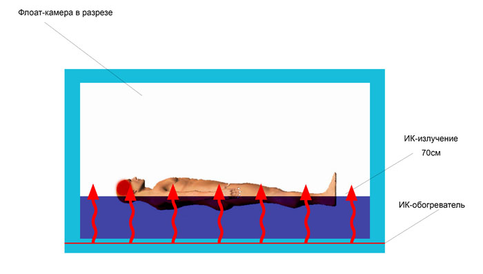

Как выбрать флоат-камеру?
Как Вы уже знаете, основой флоатинга является сенсорная депривация, то есть изоляция – от звука, света, ощущения гравитации и тактильных ощущений.
Толщина стенок
При выборе флоат-камеры обратите особое внимание на толщину стенок: чем толще стенка флоат-камеры, тем более она звукоизолированна. Также, немаловажно, чтобы внутреннее пространство камеры, включая чашу, не было выполнено из «звонких» материалов, таких как акрил и пластик. У пластика и акрила очень высокая звукопроводящая способность.
Светоизоляция
Дверь – это одно из самых слабых мест в плане свето- и шумоизоляции. Дверь в камеру должна быть достаточно толстой и герметично установленной – не должна пропускать лучи света извне.
Контроль температуры (Самое важное)
Принципиально важное значение в процедуре имеет баланс температуры раствора и температуры воздуха внутри камерного пространства. Если температуры сильно разнятся, то процедура теряет свою суть.
Также, в результате образуется конденсат на потолке камеры. Капли, падающие с потолка на посетителя, сводят к нулю процесс глубокого расслабления. Температура раствора и воздуха должна быть стабильной и эффективно поддерживаемой на нужных установках. Поинтересуйтесь у производителя, какова точность контроля температуры.
Некоторые производители используют в конструкции флоат-камер проточные водонагреватели. Устройство и принцип работы таких нагревателей даёт большую погрешность в температурных показателях, что делает невозможным эффективное поддержание температуры раствора на заданных установках.
Проточный нагреватель работает только во время циркуляции раствора. Во время сеанса циркуляция отсутствует. Соответственно раствор не подогревается и остывает. Человек, находящийся в камере, уже к середине сеанса начинает ощущать прохладу и процедура теряет смысл.
Опасность ИК-нагревателей
Еще встречаются флоат-камеры с использованием инфракрасного пленочного нагревателя (пленочный теплый пол), что категорически нельзя делать, это опасно для здоровья. Мало того, использование такого типа обогревателей в корне противоречит сути процедуры.
Исследования, изучающие действие инфракрасных лучей на людей, ведутся довольно давно. В лечебных целях это излучение используется в физиотерапевтических процедурах, ОГРАНИЧЕННЫХ ПО ВРЕМЕНИ!
Как работает ИК-обогреватель?

ИК-обогреватель не греет воздух, а нагревает предметы, которые в свою очередь отдают тепло в воздух. Если установки излучают длинные волны, они лишь повышают температуру тела. А коротковолновые лучи изменяют температуру внутренних органов человека. В этом и заключается главный вред подобных установок.
Как он проявляется? Если на один градус повышается температура головного мозга, развивается эффект солнечного удара. У человека возникает тошнота и головокружение, пульс учащается, в глазах темнеет. Увеличение температуры головного мозга на 2 градуса приводит к развитию менингита. Попадание коротких волн в глаза приводит к образованию катаракты. Поэтому находиться вблизи обогревателей с таким излучением в течение длительного времени нельзя.
В таких условиях воздействие ИК-нагревателя особенно ощутимо в области головы – мозг как в микроволновке «закипает», а также расширяются сосуды, и это всё ощущается физически – неприятно и опасно для здоровья.
Данное обстоятельство противоречит требованиям флоатинга – лишение всех внешних раздражителей и воздействий. Флоат-камеры с таким типом обогревателя априори не могут предоставить полноценный качественный сеанс.
Вентиляция
Должна быть бесшумной и не пропускать свет.
Эксплуатационные требования
Автоматизация всех процессов упрощает работу оператора флоат-камеры, сводит к минимуму его ошибки, делает процедуру флоатинга максимально комфортной для посетителя. Плавность включения и выключения света и музыки имеет огромное влияние на глубину расслабления и качество процедуры.
Фильтрация
Для очистки гипертонического раствора соли достаточно многоступенчатого фильтра механической очистки и УФ стерилизатора. Хлорирование раствора крайне нежелательно в условиях замкнутого пространства камеры. Поинтересуйтесь у производителя о составляющих системы фильтрации и о доступности расходников.
Акустическая система
Большинство камер снабжено акустическими системами. Их два вида: это обычные внешние динамики и подводные. Вторые – предпочтительнее, так как музыку Вы чувствуете всем телом.
Поинтересуйтесь у производителя о наличии плеера, чтобы Вам не пришлось "изобретать велосипед". Акустическая система должна быть неразрывно связана с таймером сеанса.
- Для спокойствия вашего клиента необходимо наличие тревожной кнопки внутри камеры.
- Возможность выбора цвета освещения расширяет спектр оказываемых услуг (хромотерапия).
- Огромное значение имеет объем внутреннего пространства. Если человек может стоять в полный рост в камере – то это замечательно.